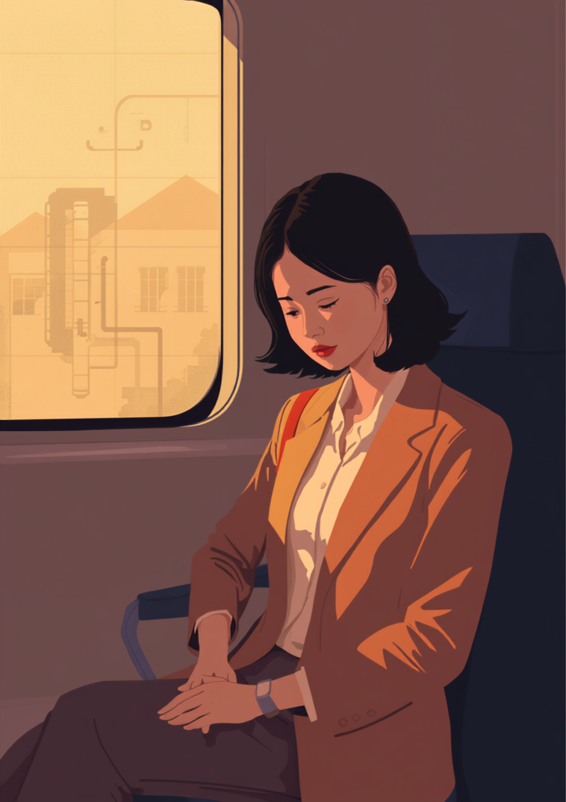
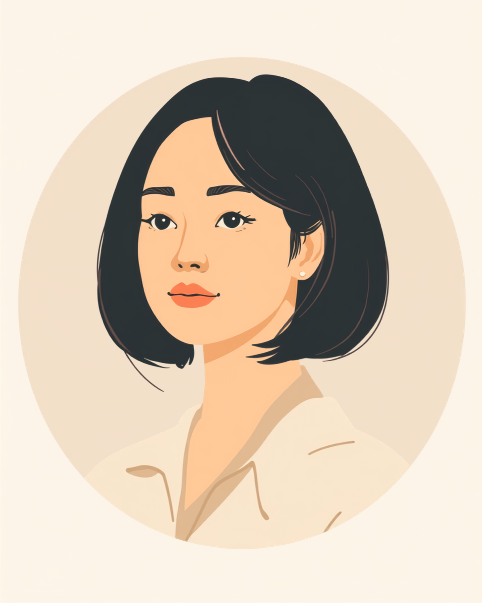

雑談が終わったあと、頭の中で今日のやり取りを何度も振り返ってしまう。相槌のタイミングや表情が「変じゃなかったか」気になって、家に帰ってからもぐったり疲れている。そんな感覚を長年抱えながら、大人になってから自閉スペクトラム症（ASD）に気づく女性は少なくないとされています。この記事では、女性のASDが見過ごされやすい理由と、職場での「合わせる」疲れとの付き合い方を、当事者の声をもとに整理しました（2026年8月時点の情報です）。
PR



雑談を終えたあとの帰り道、今日の会話を一人で振り返ってしまう
「今日の雑談、変じゃなかったかな」。女性のASDが見過ごされやすい理由

自閉スペクトラム症（ASD）は、対人関係やコミュニケーション、こだわりの強さなどに特性がある発達障害の一つです。女性は周囲を観察して合わせる「カモフラージュ」と呼ばれる行動が得意な傾向があるとされ、そのぶん特性が周りから気づかれにくいことがあります。まめざる
就労支援の現場で関わってきた中で、女性のASDのある方から繰り返し聞いてきた言葉があります。「雑談のあと、頭の中で今日の会話を何度もリプレイしてしまうんです」というものです。カモフラージュとは、相手の表情や場の空気を観察し、求められている反応を意識的に選び取って振る舞うことを指します。うまくできているように見えるぶん、周りからは「コミュニケーションが得意な人」だと思われやすく、本人の中にある疲労には気づかれにくい傾向があるようです。
男性に比べて女性のASDが見過ごされやすい背景には、同年代・同性同士の雑談で「共感」や「場に合わせること」がより強く求められやすいという事情もあるとされています。結果として、本人は毎日の雑談を懸命に「演じ」続け、その疲れが職場では見えにくいまま蓄積していくことになります。
!
ASDの特性の現れ方や、カモフラージュの強さ・疲労の感じ方には個人差があります。この記事で挙げる内容がそのまま当てはまるとは限らないため、しんどさが続く場合は自己判断せず医療機関や支援機関に相談することをお勧めします。
「正直言うと、診断がついたのは28歳のときでした。それまでずっと『なんで自分だけこんなに疲れるんだろう』って思ってて。会議のあと、みんなで雑談しながら帰る流れになると、頭の中で『今なんて相槌打てばいいんだろう』って必死に考えてて、家に着く頃にはもうくたくたでした。診断がついて一番ほっとしたのは、これは性格じゃなくて特性なんだって分かったことです。」
30代・女性（ASD・事務職）
相談の一コマ

相談者
雑談のあと、いつも「今日変じゃなかったかな」って一人反省会しちゃうんです。相槌のタイミングとか、表情とか、ずっと考えちゃって。
まめざる
それは、雑談の間ずっと「次はどう反応すればいいか」を考えながら会話していたということですよね。それだけ頭を使っていたら、疲れるのは当然だと思いますよ。
相談者
疲れて当然なんですね…。自分の努力が足りないだけだと思ってました。
まめざる
努力の量の問題ではなく、使っているエネルギーの種類が違うんです。全部の雑談を完璧にこなそうとせず、聞き役に回る時間を増やすなど、力の抜きどころを一緒に探っていきましょう。
「カモフラージュ」という戦略、その裏にある疲弊
カモフラージュは、その場をやり過ごすための工夫として身につけてきた戦略とも言えます。ただし、常に相手の反応を観察し、自分の言動を調整し続けることは、想像以上にエネルギーを使う作業です。近年は、こうした状態が長く続いた結果として強い消耗が生じることを指して自閉症バーンアウトと呼ぶ考え方も紹介されるようになってきました。
外から見える様子と、内側で感じている疲労は正反対になっていることがある
「営業職なので、雑談も仕事のうちだってずっと自分に言い聞かせてきました。お客さんの前ではちゃんと愛想よく振る舞えるんです。でも育休明けで時短勤務になって、家でも職場でも人に合わせる場面が増えたら、ある日突然涙が止まらなくなって。心療内科に行ったら『カモフラージュによる消耗が大きい』って言われて、初めて自分の疲れに名前がついた気がしました。半年くらいかけて、少しずつ『愛想笑いしなくていい時間』を意識的に作るようにしています。」
40代・女性（ASD・営業職）
疲れのサインに気づく
カモフラージュによる疲労は、休日にどっと出てくることが多いとされています。「土日はほとんど動けない」「一人になれる時間がないと落ち着かない」といった状態が続く場合、無理を重ねているサインかもしれません。
i
疲れのサインには個人差がありますが、頭痛や強い眠気、感覚過敏の悪化、涙が急に出るといった形で現れることもあるとされています。気になる不調が続く場合は、我慢せず医療機関に相談することをお勧めします。
診断がついて分かること、つかなくても変えられること
女性のASDは、就職や転職、結婚、育児など、環境やライフステージが大きく変わる場面をきっかけに気づかれることが多いとされています。それまで何とかこなせていた「合わせる」作業が、新しい環境の負荷に耐えられなくなって表面化する、というイメージに近いのかもしれません。
グレーゾーンでも相談はできる
診断がつくかどうかにかかわらず、日々のしんどさそのものは本物です。「診断名がないと相談してはいけない」と感じてしまう方もいますが、業務に関わる具体的な困りごとについては、診断の有無を問わず相談できる場合があります。
「診断はまだ受けてないんですけど、多分そうなんだろうなとは思ってます。休憩室での女子トークについていけなくて、みんなが笑ってるタイミングで一拍遅れて笑うのが自分でも分かるんです。それを3年くらい続けてたら、ある日急に『今日はもう無理』って涙が出てきて、初めて心療内科を予約しました。診断がつくかどうかより、しんどさに名前をつけてもらえるだけでも違うのかなと今は思ってます。」
20代・女性（ASD・接客業）
i
診断を受ける場合は、精神科や心療内科、発達障害の専門外来などが窓口になります。予約が数ヶ月先になる医療機関もあるとされているため、気になる方は早めに情報を集めておくと安心です。
職場でできる工夫と、頼れる制度・相談先
具体的な場面に絞って伝えるという考え方
特性のすべてを説明しようとすると、かえって伝わりにくくなることがあります。業務に関わる具体的な場面だけに絞って伝える方法が、双方にとって負担が少ないとされています。
- 「雑談中に相槌のタイミングで悩むことがあるので、聞き役に回らせてもらえると助かります」
- 「大人数での立ち話より、1対1や少人数での会話のほうが集中しやすいです」
- 「休憩時間は一人で過ごす時間をいただけると、午後の作業に集中しやすくなります」
- 「表情が乏しく見えることがありますが、話を聞いていないわけではありません」
「愛想がいい」「コミュニケーションが得意」という評価の裏に、大きな疲労が隠れていることがあります。すべての場面で完璧に合わせようとせず、力を抜いていい場面を少しずつ増やしていくことは、決してわがままではありません。まめざる
診断を受けた場合、精神障害者保健福祉手帳の取得を検討できる場合があります。手帳を取得すると、障害者雇用枠での就職や、企業側の合理的配慮を前提にした働き方を選びやすくなることがあります。取得の要否は状況によって異なるため、詳しくは主治医や自治体の障害福祉窓口にご確認ください（2026年8月時点の情報です）。
相談できる窓口
- 精神科・心療内科・発達障害の専門外来（診断や、働き方についての意見書の相談）
- 職場に選任されている産業医（50人以上の事業場に選任義務あり）
- 自治体の障害福祉窓口、発達障害者支援センター
- 就労移行支援事業所（自分に合った働き方を整理し、職場との調整を一緒に進める）
ASDの特性の現れ方、カモフラージュの強さ、疲労の感じ方には個人差があります。この記事の内容がそのまま当てはまるとは限らないため、実際の判断は主治医・支援者・自治体の窓口とよく相談しながら進めることをお勧めします（2026年8月時点の情報です）。
雑談のあとの一人反省会は、あなたの努力が足りないからではありません。それだけ多くのエネルギーを使って周りに合わせてきたということです。すべてを演じ続けなくていい場面を、少しずつ増やしていくことができます。
よくある質問
Q. 女性のASD（自閉スペクトラム症）は男性と何が違うのですか？
女性は対人関係の場面で相手の様子を観察し合わせる「カモフラージュ」と呼ばれる行動が得意な傾向があるとされ、特性が周囲から気づかれにくいことがあります。そのぶん本人は人一倍疲れを感じやすいという声も聞かれます。
Q. 大人になってからASDと診断されることはありますか？
就職や結婚、育児など環境が大きく変わる場面をきっかけに、大人になってから診断を受ける方は珍しくないとされています。診断の有無にかかわらず、しんどさを感じている場合は専門機関に相談してみることをお勧めします。
Q. 「カモフラージュ」で疲れてしまうときはどうすればいいですか？
一日のうち意識的に人と関わらない時間を作る、雑談が求められる場面をあらかじめ減らしておくなど、負担を減らす工夫を取り入れている方が多いようです。無理に続けると体調を崩すケースもあるとされているため、疲れのサインを感じたら早めに休むことも大切です。
Q. 診断書がなくても職場に配慮を相談できますか？
診断がついていない、いわゆるグレーゾーンの状態でも、業務に関わる具体的な困りごとについては相談できる場合があります。ただし配慮の内容は職場や状況によって異なるため、まずは信頼できる上司や人事、支援機関に相談してみることをお勧めします。
Q. 障害者手帳がなくても支援を受けられますか？
精神障害者保健福祉手帳の取得には医師の診断が必要ですが、手帳がない段階でも、就労移行支援事業所や地域の相談窓口で働き方について相談できる場合があります（2026年8月時点の情報です）。
「自分らしさ」と「職場での信頼」は、重ねていくことができる
PR


一人で抱え込む前に、今の気持ちを話してみませんか
「まだ迷っている」段階でも大丈夫です。mimemimeの無料相談は、今の状況の整理から一緒に始められます。
無料で話してみる
この記事に、聞いてみたいことはありますか？
「自分の場合はどうなんだろう」と思ったことを、気軽に書いてみてください。いただいた質問は個別にお返事したうえで、匿名で記事にすることがあります。
おのざる
mimemime代表。就労支援の現場経験をもとに、障がいのある方の働く不安に寄り添う記事を執筆。